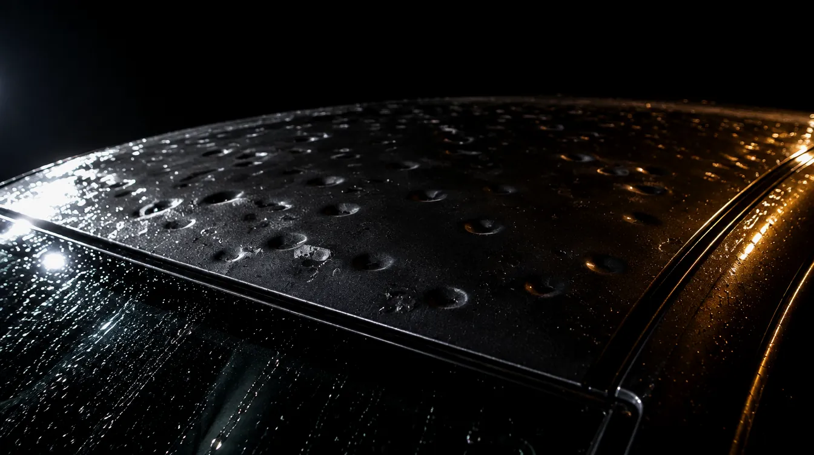
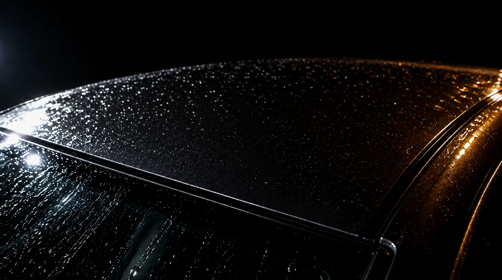
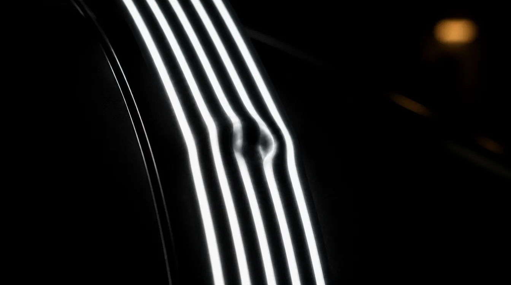
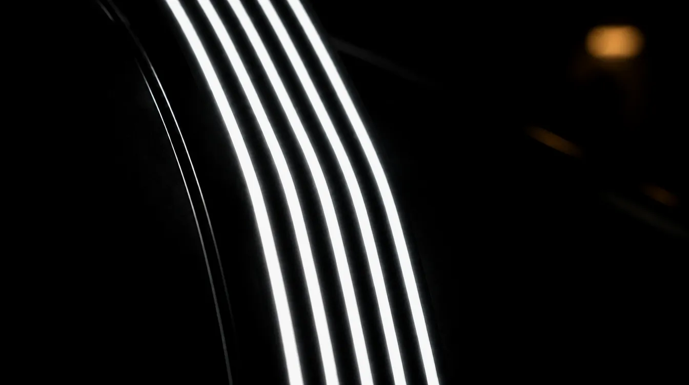
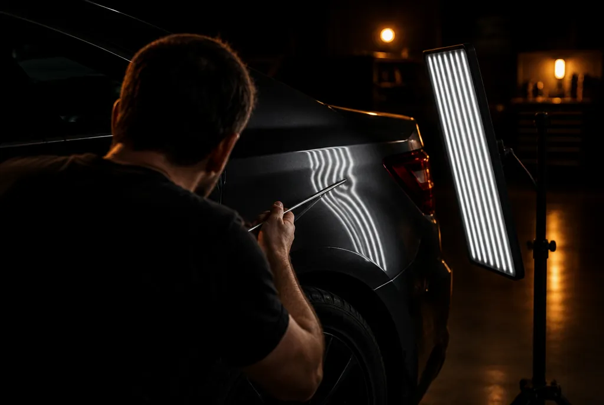
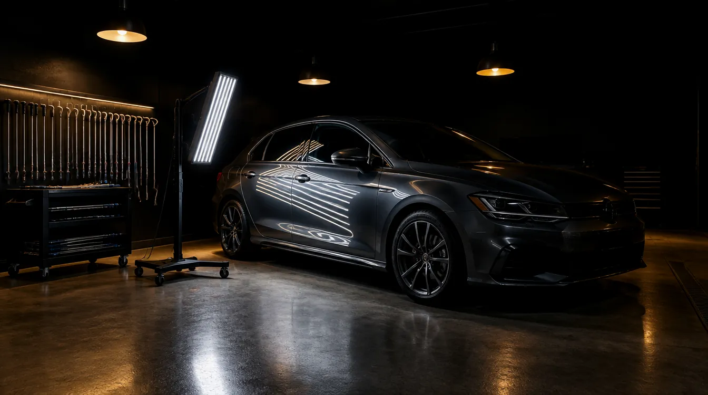

Paweł Kryniewicz · Siedlce i okolice
Usuwanie wgnieceń metodą PDR — bez szpachli, bez lakierowania, bez śladu w historii auta. Zwykle w jeden dzień.
01 · Co naprawiam
Drzwi sąsiada, słupek, wózek z marketu. Najczęstsza robota i najszybsza — zwykle poniżej godziny.
Dach, maska, klapa, błotniki. Po gradzie zostaje kilkadziesiąt wgniotek — i to jest naprawa, w której PDR jest bezkonkurencyjny.
Trudniejsze miejsca, gdzie blacha jest usztywniona. Wymaga więcej czasu, ale zwykle też da się zrobić bez lakierowania.
Nowsze maski i klapy z aluminium — inna technika, inne narzędzia, mniej wybaczający materiał. Robię, ale wyceniam osobno.
Przegląd całej karoserii i zbicie wszystkich wgniotek naraz. Zwykle najtańszy sposób, żeby podbić cenę auta.
Stałe stawki pakietowe, dojazd na miejsce, faktura. Przy większej liczbie aut umawiamy się na cykliczne wizyty.
02 · Przed i po
Ten sam kadr, to samo światło, ta sama blacha. Różnica jest tylko jedna.


Kilkadziesiąt płytkich wgniotek na dachu i ramie szyby. Cała naprawa bez zdejmowania jednego elementu lakierniczego.


Po lewej odbicie łamie się nad wgniotką. Po prawej biegnie równo — i dopiero wtedy robota jest skończona.
Kadry poglądowe — przy wdrożeniu wstawiamy zdjęcia z realnych napraw.
03 · Jak to działa

Typ i głębokość wgniotki, stan lakieru, dostęp do blachy od spodu. Jeśli się nie da — mówię to od razu, zanim cokolwiek zrobię.
Zdjęcie tapicerki, uszczelki albo lampy — albo, gdy dostępu nie ma, praca od zewnątrz na klejowych tabach.
Hak od spodu albo puller od góry. Po każdym ruchu patrzę w odbicie linii, nie w blachę. To jest cała ta robota.
Zbicie nadlewek, potem kontrola pod lampą i przy dziennym świetle z kilku kątów. Odbieramy auto razem.
04 · Ile to kosztuje
To są realne przedziały, nie „zadzwoń po wycenę". Ostateczna cena po obejrzeniu auta albo po zdjęciu — i zawsze przed rozpoczęciem pracy.
| Wgniotka do 2 cm, płaska powierzchnia | 120–150 zł |
| Wgniotka 2–5 cm | 150–250 zł |
| Wgniecenie powyżej 5 cm | 250–500 zł |
| Krawędź, przetłoczenie, słupek | od 200 zł |
| Zderzak z tworzywa | 100–300 zł |
| Pakiet kilku wgnieceń | od 50 zł / szt. |
| Auto po gradzie | wycena indywidualna |
Dopłaty: demontaż tapicerki lub elementów dla dostępu, aluminium, wyjątkowo trudne miejsce. Zawsze podaję je przed startem.
05 · Grad i ubezpieczenie
Po gradobiciu ubezpieczyciel i tak liczy koszt naprawy. PDR jest tańszy i szybszy od blacharni, a auto zostaje z fabrycznym lakierem — więc naprawa nie wchodzi do jego historii jako lakierowanie.
Z polisy AC, standardowo u swojego ubezpieczyciela.
Liczę wgniotki, robię dokumentację i kosztorys pod ubezpieczyciela.
Zwykle 2–4 dni przy całym aucie, zależnie od liczby uszkodzeń.
Bezgotówkowo, bezpośrednio z ubezpieczycielem — bez wykładania pieniędzy.
06 · Uczciwie
Żadna strona w tej branży tego nie pisze. Wolę powiedzieć to zanim przyjedziesz, niż po.
Jeśli się nie da, powiem od razu i nie wezmę pieniędzy za oględziny. Zwykle potrafię też podpowiedzieć, do kogo w okolicy pójść.
07 · Opinie
„Wgniotka na drzwiach od wózka. Godzina roboty i nie umiem znaleźć miejsca, gdzie była."
Michał K. · Golf VII · Siedlce
„Po gradzie blacharnia chciała trzy tygodnie i lakierowanie połowy auta. Tu trzy dni i lakier oryginalny."
Anna W. · Octavia · Mińsk Mazowiecki
„Przyjechał do mnie pod firmę, zrobił dwa auta z floty na parkingu. Faktura, konkret, zero gadania."
Tomasz R. · flota busów · Łuków
Opinie poglądowe — przy wdrożeniu podpinamy prawdziwe z wizytówki Google.
08 · Obszar
Pracuję u siebie w Siedlcach, a przy większych zleceniach i flotach dojeżdżam na miejsce.
09 · Pytania
10 · Kontakt

Robota w jednym miejscu, bez przekazywania auta dalej. Zostawiasz je rano, odbierasz z powrotem gładkie — i z tym samym lakierem, z którym wyjechało z fabryki.